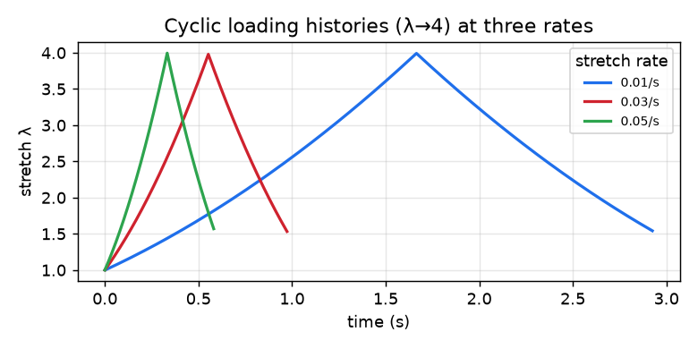
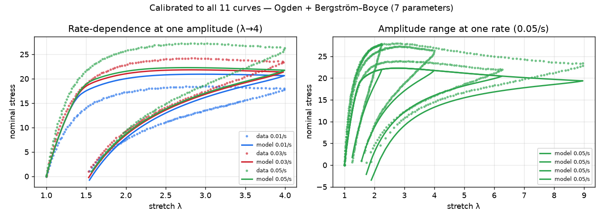
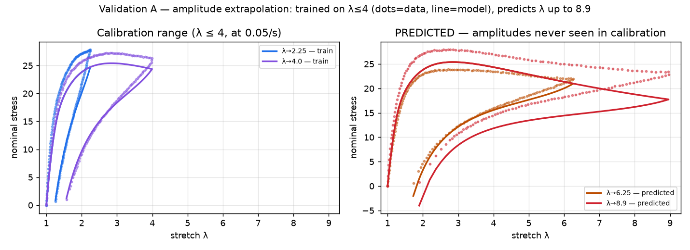
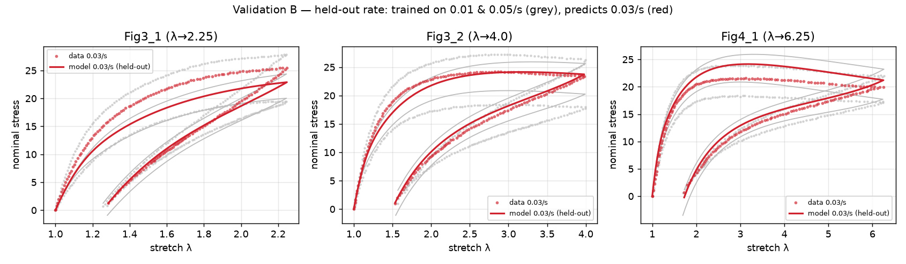

Recover a rubber's rate-dependent material parameters from lab data by gradient descent, and predict held-out experiments.
Run the problem backwards. Instead of designing a structure, we take real laboratory measurements of a rubber and recover the hidden material-model parameters that reproduce them — automatically, by gradient descent on a differentiable simulation (an inverse problem / model calibration). Then we check the calibrated model predicts experiments it never saw.

The test is a single material sample pulled and released in cycles; the model is fit to the resulting stress vs. stretch loops. Faster pulls give higher stress (rate-dependence).
| Material | VHB 4910 — a strongly rate-dependent acrylic rubber (real published test data, CC-BY-4.0; Hossain–Vu–Steinmann 2012 via the iCANN archive) |
| Test data | 11 cyclic stretch-and-release pulls: 4 maximum stretches (λ up to ~2.25, 4, 6.25, 8.9) × 3 loading speeds (0.01 / 0.03 / 0.05 per second) |
| Model | Ogden hyperelastic network + one Bergström–Boyce rate-dependent (viscous) branch — 7 parameters |
| Method | A differentiable material-point simulation in JAX; parameters found by gradient descent (the gradient of the data-misfit is computed automatically) |
| What we check | fit quality (R²) and TWO held-out predictions — an unseen loading speed, and stretches beyond the calibration range |
R² (1.0 = perfect): how well the calibrated stress matches the measured stress, on the fitted curves and — the real test — on held-out experiments the calibration never used.

Dots = measured, lines = calibrated model. Left: the loops stiffen with loading speed (rate-dependence); right: the four stretch amplitudes at one speed.

Calibrated only on λ≤4 (left), the model predicts the much larger λ→6.25 and λ→8.9 cyclic tests (right). It nails λ→6.25; at λ→8.9 it captures the loop but under-predicts the steep stiffening near the limit — the honest edge of extrapolation.

Trained on the slow and fast speeds (grey), the model predicts the intermediate 0.03/s tests it never saw (red) — R² = 0.9437. This is the key evidence the rate-dependent physics was identified, not just fitted.
| fit to all 11 curves | R² = 0.8637 |
| held-out loading speed (0.03/s) | trained on 0.01 & 0.05/s → predicts 0.03/s at R² = 0.9437 PASS |
| held-out amplitudes (λ→6.25, 8.9) | trained on λ≤4 → predicts larger stretches at R² = 0.848 PASS |
| over-fit check | held-out R² (rate 0.9437) ≥ training R² (0.9115) → generalises, not memorises |
| data provenance | real published data, held-out curves excluded from training; see the experiment's raw/.../SOURCE.md for citation + license |
| inverse problem | Working backwards from measured behaviour to the hidden inputs that produced it — here, finding the material parameters that make the simulation match test data. |
| calibration | Tuning a material model's parameters so its predictions match experimental measurements. |
| hyperelastic | An elastic model for large, fully-recoverable deformation (rubber): stress derives from a stored-energy function of the stretch. |
| Ogden | A widely-used hyperelastic model whose energy is a sum of power-law terms in the principal stretches; flexible enough to fit rubber from small to very large strain. |
| Bergström–Boyce | A rate-dependent (viscous) model for elastomers: an equilibrium network in parallel with a time-dependent network whose flow follows a power law in the overstress — captures how stiffness rises with loading speed. |
| viscoelastic | Rate- and history-dependent: the response depends on how fast you load and on the past, producing hysteresis (a loading/unloading loop). |
| hysteresis | The gap between the loading and unloading stress–stretch curves; its area is the energy dissipated per cycle. |
| stretch | Deformed length divided by original length (λ); λ=1 is undeformed, λ=2 is doubled. |
| nominal stress | Force divided by the ORIGINAL (undeformed) cross-section area — the engineering stress reported in most tension tests. |
| R² | Coefficient of determination: 1.0 is a perfect match to the data; it measures how much of the data's variation the model reproduces. |
| VHB 4910 | A very-high-bond acrylic elastomer (3M), a standard, strongly rate-dependent test material in the modelling literature. |
experiment folder on GitHub — README, config.yaml, results/, agent transcripts & authored code.